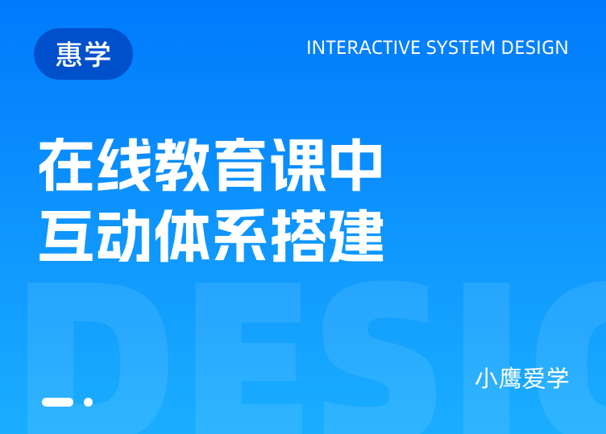
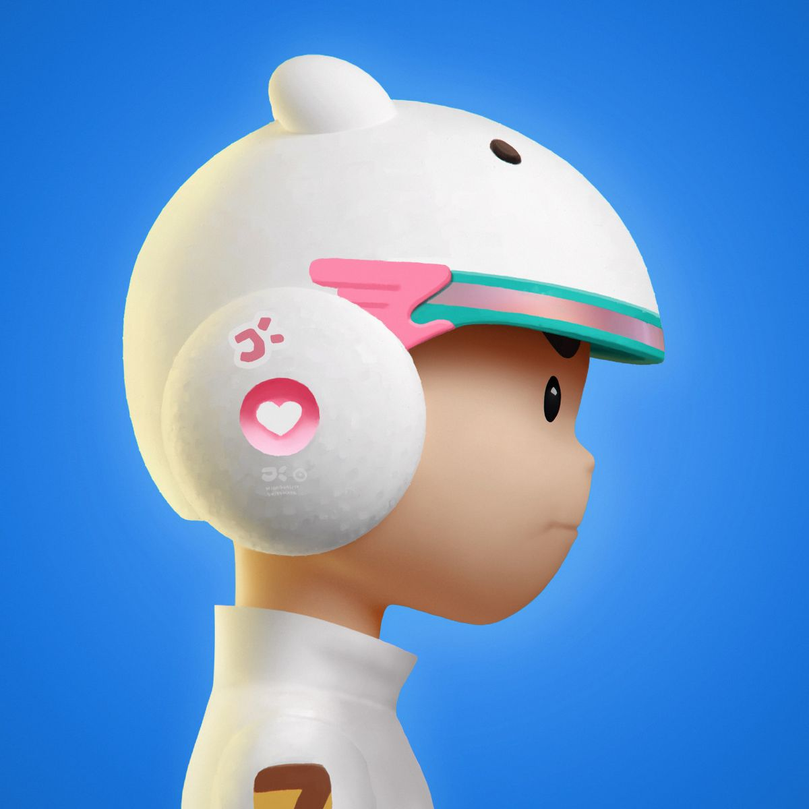
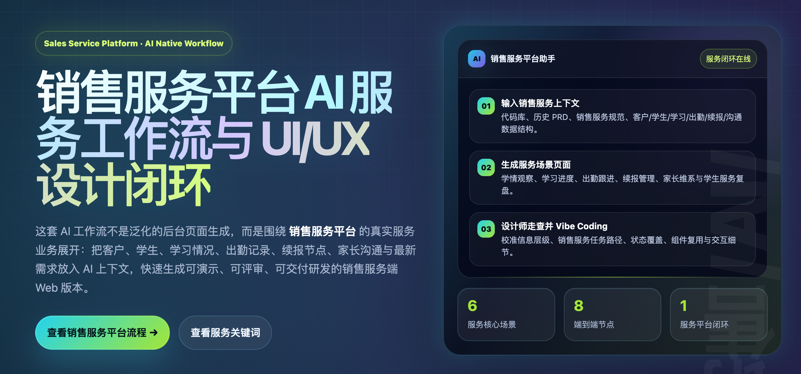

在线教育课中互动体系搭建
C端产品设计
WORK EXPERIENCE

ABOUT ME
我把视觉系统、用户体验和 AI 工作流整合成可落地的设计战斗力，擅长从 0 到 1 搭建产品体验，也能围绕增长、效率和一致性持续推动体验升级。
SELECTED WORK
SELECTED WORK / 01
AI WORKFLOW
AI WORKFLOW / 02
我把 AI 作为设计协作层：用于快速整理信息、生成研究假设、扩展方案分支、检查界面文案，并把可复用的判断沉淀成团队流程。

把访谈、需求、竞品和业务目标转化为结构化问题。
用 prompt 模板生成多组路径、页面结构和文案方向。
从可用性、一致性、可达性和业务表达上做快速审阅。
将组件、规则、案例复盘整理为可复用设计知识。
CONTACT
CONTACT / 03
CONTACT